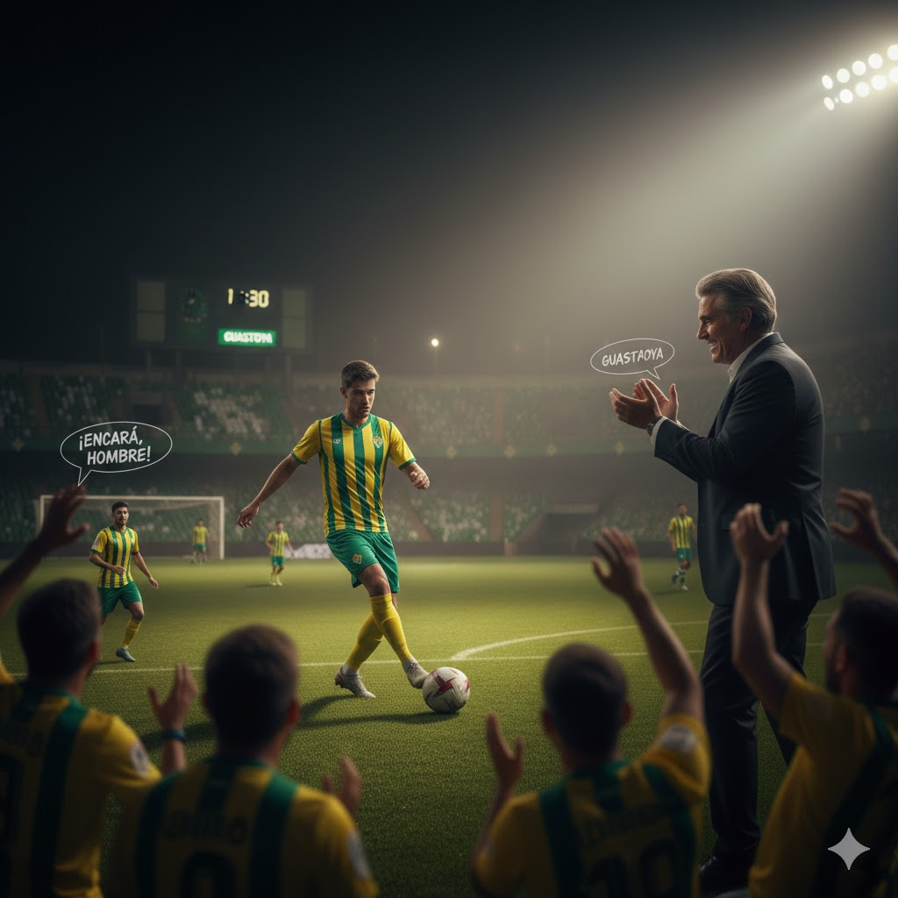

Decidís no tirarte a lo loco. Jugás con pases y movimiento. El DT te aplaude porque se nota que pensás.
Pero el público quiere show. Unos gritan: "¡encará, hombre!"
Al final del juego, te piden intentar una jugada solo.
Me quedo fiel: sigo jugando simple y seguro